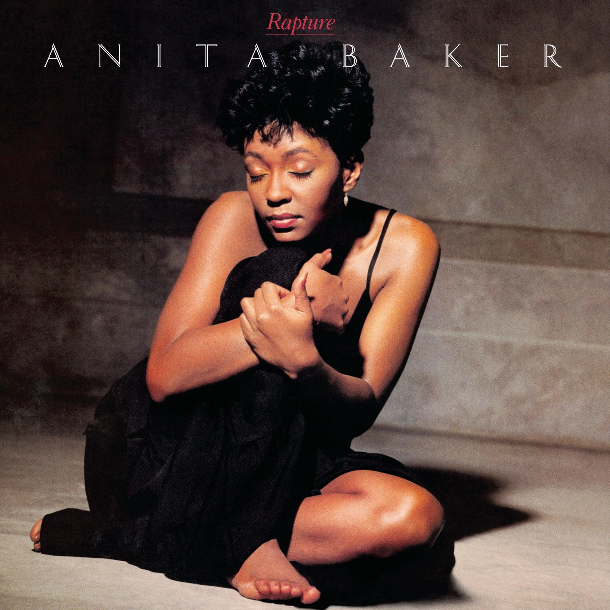
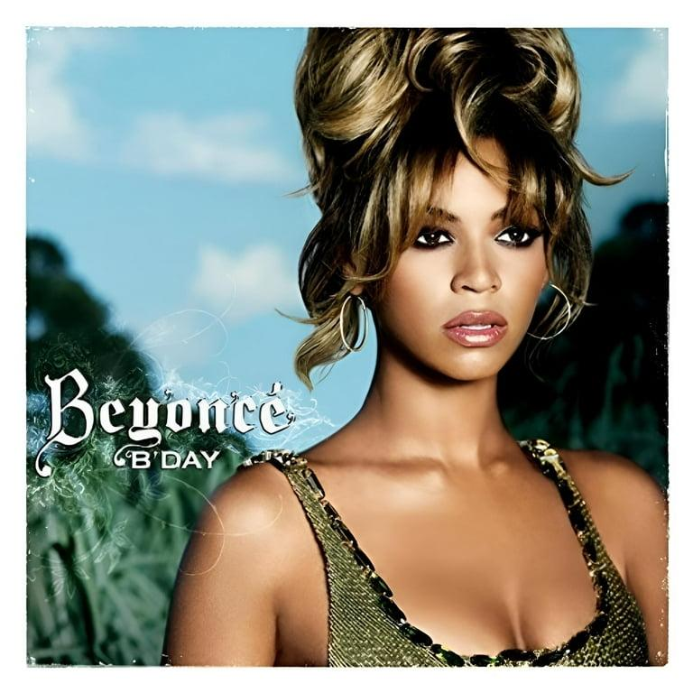
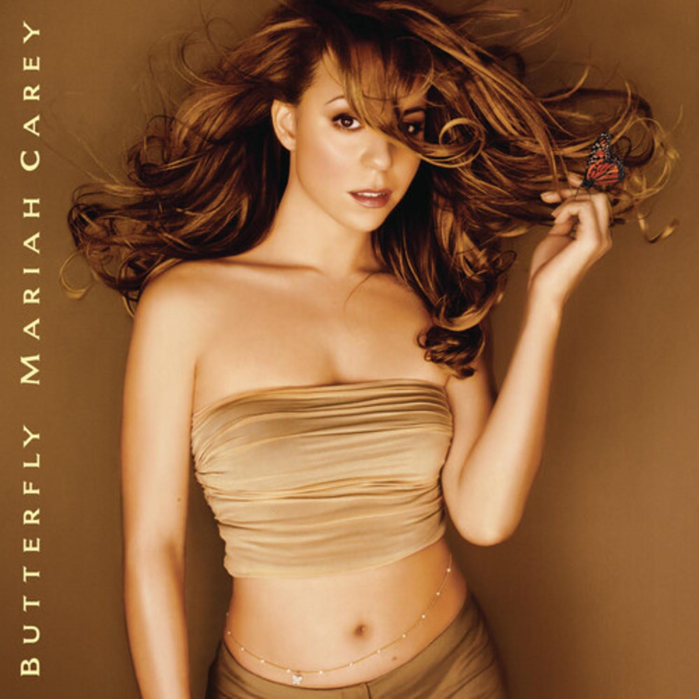
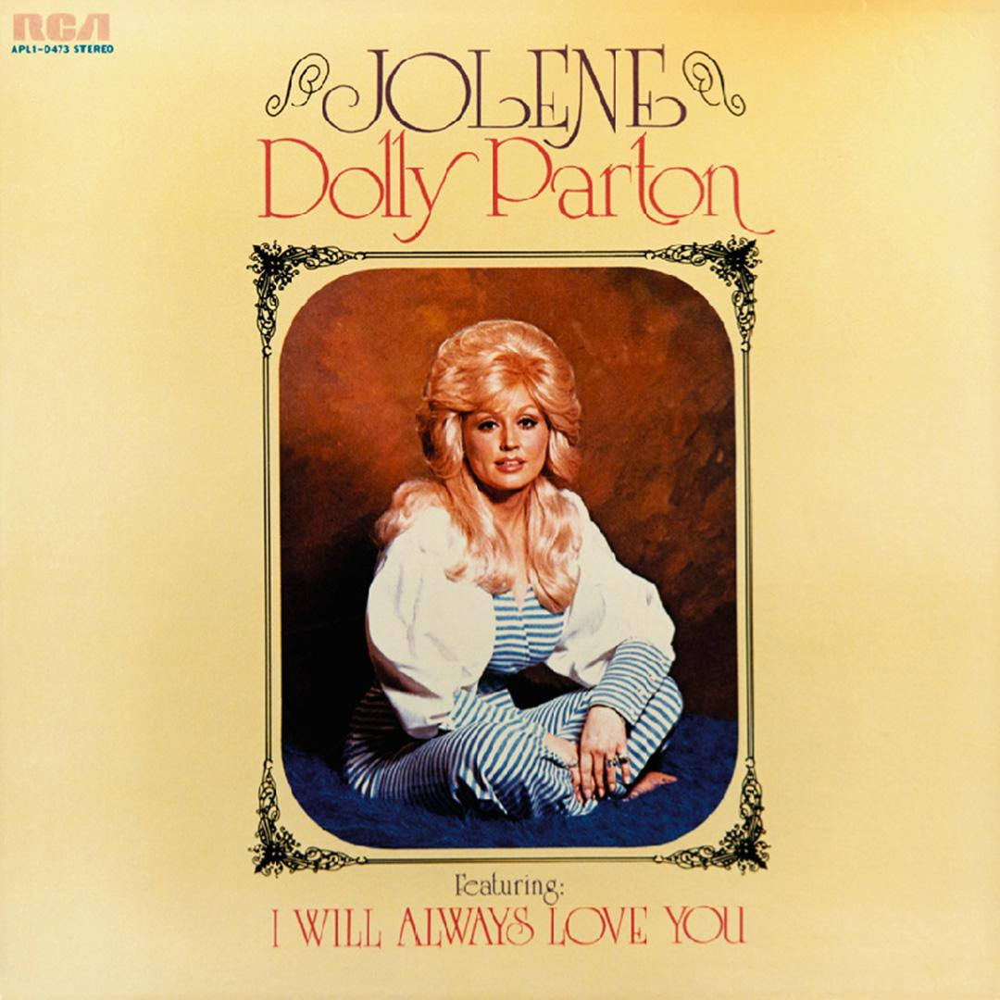
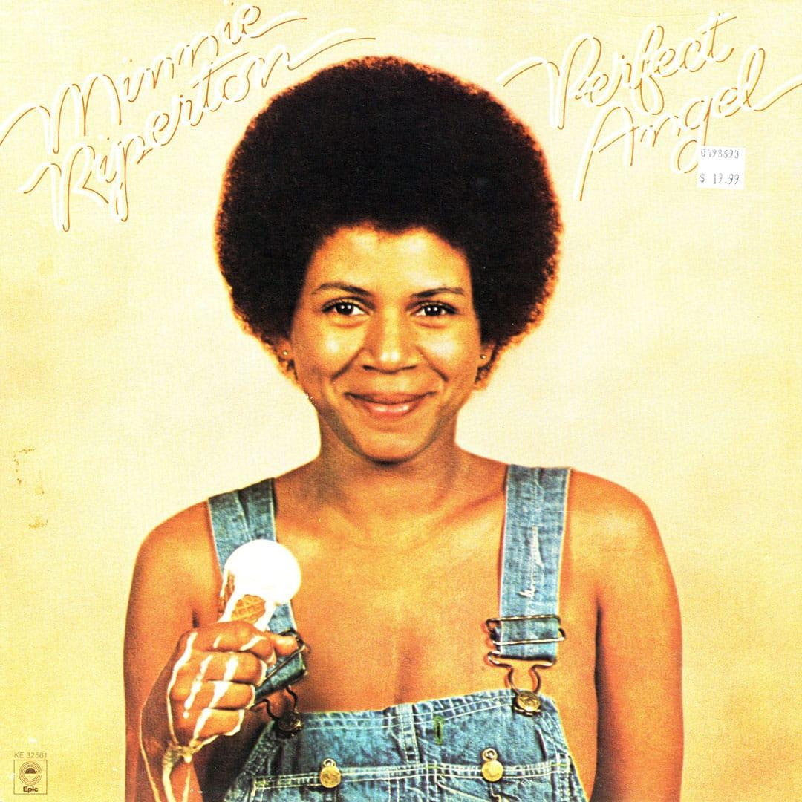
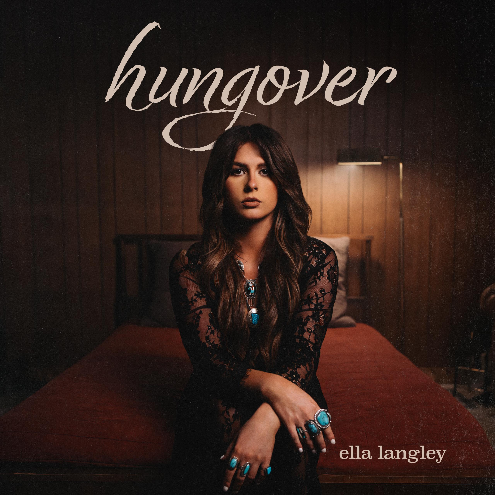

The Vinyl Vault
Welcome to my personal vinyl collection! Music has always been something I enjoy, and my taste includes everything from classic R&B and soul to pop and country. I love artists who have powerful voices, meaningful lyrics, and music that never gets old. These six albums represent some of the artists and sounds I enjoy the most.

Rapture
Album | 1986 | Anita Baker | R&B / Soul
Anita Baker is one of my favorite artists because her music is timeless. I love her smooth voice and the relaxing atmosphere her songs create. Rapture is an album I can listen to from beginning to end, and it represents my love for classic R&B.

B'Day
Album | 2006 | Beyoncé | R&B / Pop
Beyoncé has always been one of my favorite artists. I love B'Day because it showcases her powerful vocals, confidence, and versatility. Songs like "Irreplaceable" and "Déjà Vu" make this album a timeless favorite in my music collection.

Butterfly
Album | 1997 | Mariah Carey | R&B / Pop
Mariah Carey is one of my favorite vocalists because of her incredible range and beautiful songwriting. Butterfly is a special album because it combines emotional ballads with smooth R&B influences. Songs like "Honey" and "My All" make this album unforgettable.

Jolene
Album | 1974 | Dolly Parton | Country
I love Dolly Parton because her music tells stories that are emotional and relatable. Jolene is a classic country album that showcases her songwriting and unique voice. "Jolene" and "I Will Always Love You" are timeless songs that I enjoy listening to.

Perfect Angel
Album | 1974 | Minnie Riperton | Soul / R&B
Minnie Riperton has one of the most beautiful and unique voices in music. I love how her songs feel peaceful, soulful, and timeless. Perfect Angel is one of my favorites because of her incredible vocal range and songs like "Lovin' You." Her music is the kind I can enjoy while relaxing at home.

Hungover
Album | 2024 | Ella Langley | Country
Ella Langley is one of my favorite newer country artists. I enjoy her powerful voice, honest lyrics, and the way she combines traditional country influences with a modern sound. Hungover is an album I enjoy because the songs have personality, emotion, and great storytelling.